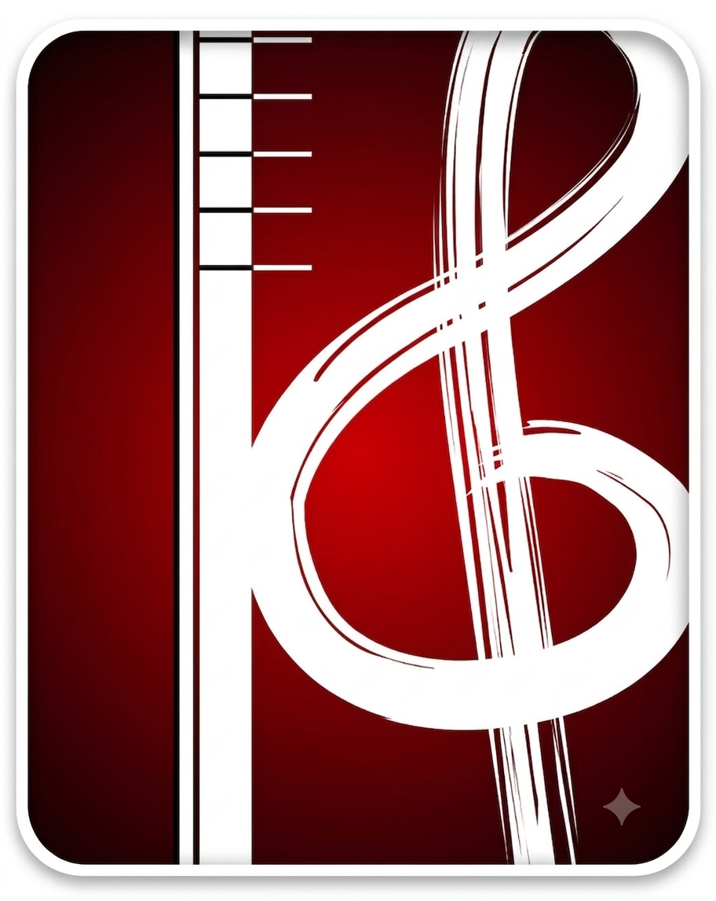

Escuela Superior de Música
de la Provincia de Salta - José Lo Giudice
Planilla de Regularidad de Alumnos
Carrera
-- Seleccionar carrera --
Materia
-- Seleccionar materia --
Docente
Comisión
Ciclo lectivo
Carrera:
Materia:
Docente:
Ciclo lectivo:
Esta materia tiene varios profesores o comisiones: elegí uno arriba para cargar sus inscriptos, o usá "Recargar inscriptos" para traerlos a todos.
#
Legajo
Apellido y Nombre
Calificación
Condición
+ Agregar alumno
Recargar inscriptos
Descargar PDF
Vaciar planilla